Área do Prestador
Para guias, recepcionistas, comissários(as) de bordo, coordenadores e demais prestadores: como receber convites, consultar o briefing, fazer o check-in dos passageiros, enviar o relatório e acompanhar seus pagamentos.
Cada capítulo explica uma tela, com a imagem dela no celular. Leia o capítulo 1 no primeiro dia; os outros servem de consulta.
A Área do Prestador funciona no navegador do celular, sem aplicativo para instalar. Você entra com seu CPF e sua senha.
Acesse sistema.645turismo.com.br. Para abrir mais rápido, use a opção do navegador "Adicionar à tela inicial": o atalho fica junto dos seus aplicativos.
| Botão | Para que serve |
|---|---|
| Hoje | Próximo trabalho, pendências e recados da 645 |
| Viagens | Convites e trabalhos em viagens e tours |
| Serviços | Recepção, serviço de bordo, eventos e outros trabalhos |
| Ganhos | Valores, nota fiscal e pagamentos |
| Mais | Consultoria, Pós-viagem, Agenda, Perfil, Ajuda e Sair |
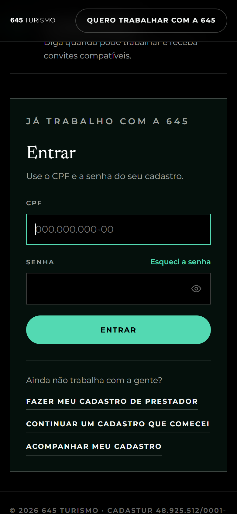
Há dois caminhos: você mesmo se cadastra, ou a equipe da 645 cria seu pré-cadastro e manda uma senha temporária por e-mail.
Na tela de entrada, toque em Quero trabalhar com a 645 e siga as etapas.
Parou no meio? Toque em "Continuar um cadastro que comecei" e informe o CPF: um link para continuar chega no seu e-mail, em qualquer celular ou computador.
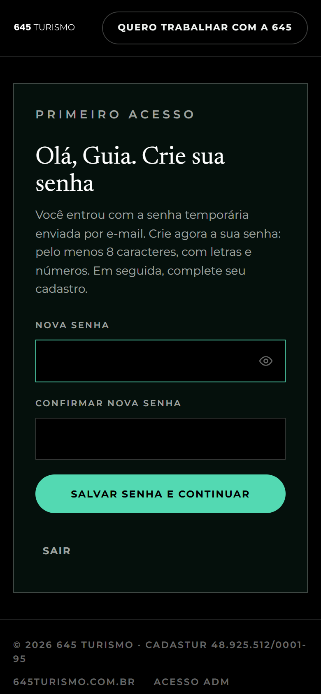
| Etapa | O que pede |
|---|---|
| Quem é você | Nome, nascimento, celular (WhatsApp), e-mail, endereço, tamanho de camiseta, restrição alimentar e cuidados de saúde |
| Sua atuação | Funções (guia, recepcionista, comissário(a) de bordo, coordenador(a), estagiário...), idiomas e especialidades. O Cadastur é obrigatório para a função Guia de Turismo |
| Recebimento | CNPJ para a nota fiscal e chave PIX |
| Acesso | Senha (só no cadastro feito por você) e aceite dos termos |
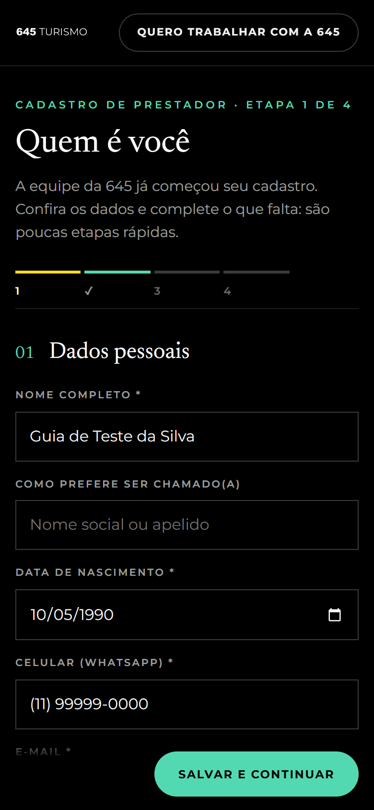
Na etapa Recebimento, marque "Não emito nota fiscal". Os campos de CNPJ somem e você recebe só pelo PIX.
Ao concluir, o cadastro fica em análise. A equipe confere e avisa por e-mail. Você pode acompanhar em "Acompanhar meu cadastro", na tela de entrada.
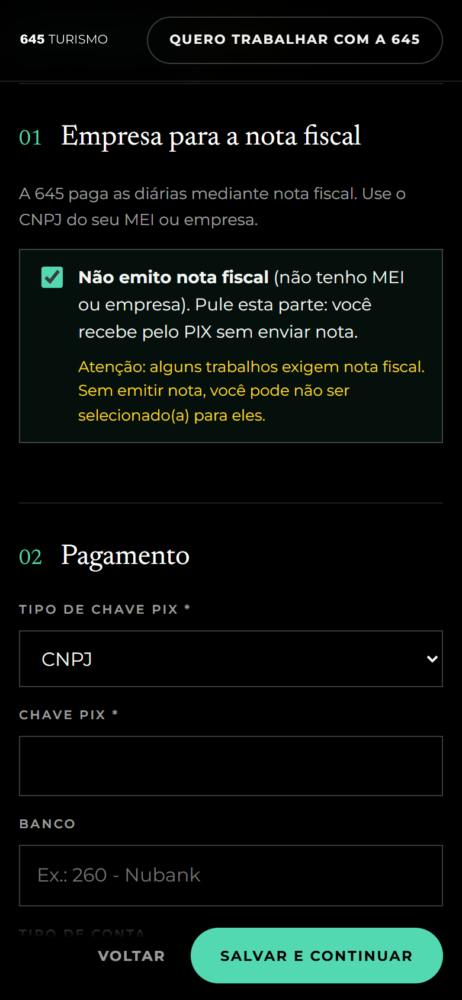
É a primeira tela depois de entrar. Mostra o que importa no dia, sem precisar procurar.
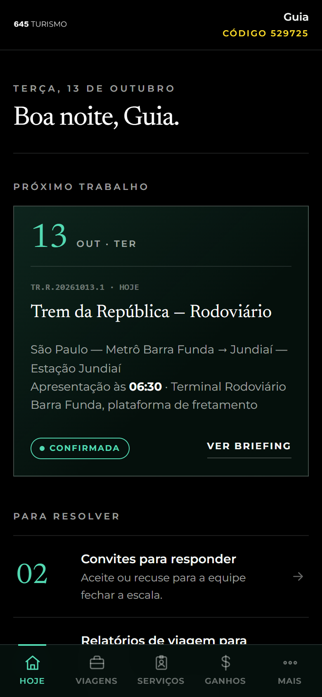
A equipe convida você para trabalhar. Você recebe um e-mail e o convite aparece em Viagens (ou em Serviços, capítulo 5). O valor vem só no e-mail.
Responda o quanto antes: a equipe fecha a escala com quem confirma primeiro.
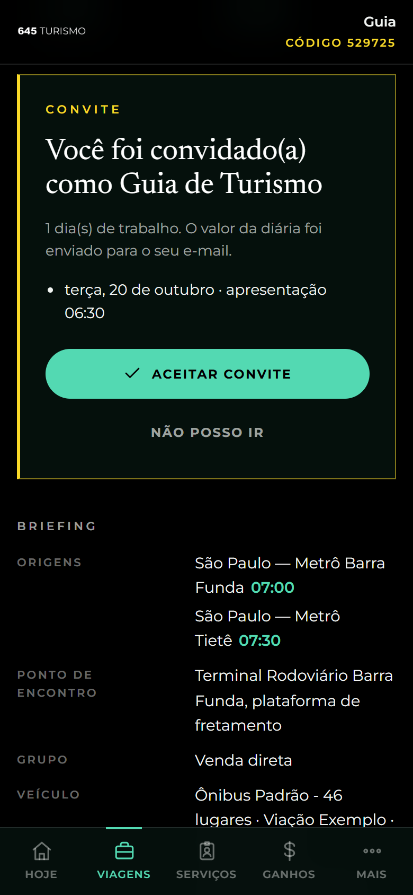
Abra uma viagem confirmada para ver tudo o que você precisa no dia:
No topo fica o atalho Lista de passageiros e mapa do carro (capítulos 6 e 7).
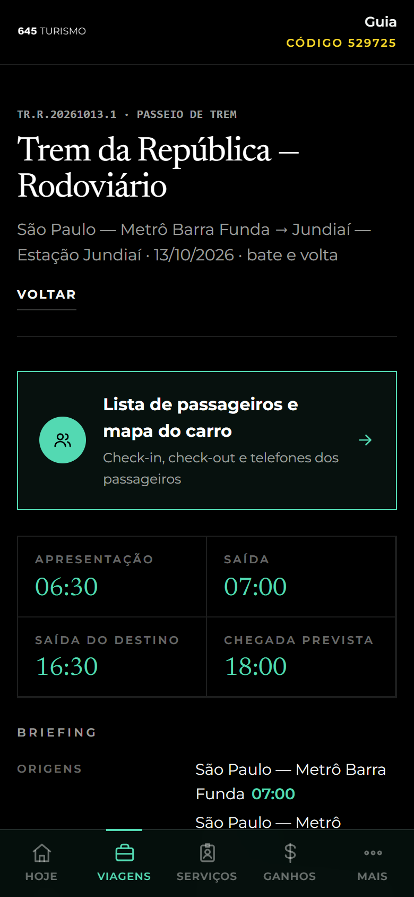
Depois de confirmar presença, você vê quem mais vai trabalhar com você e a função de cada um. O seu nome aparece com (você). Só aparecem nome e função: telefones e outros dados dos colegas ficam com a coordenação.
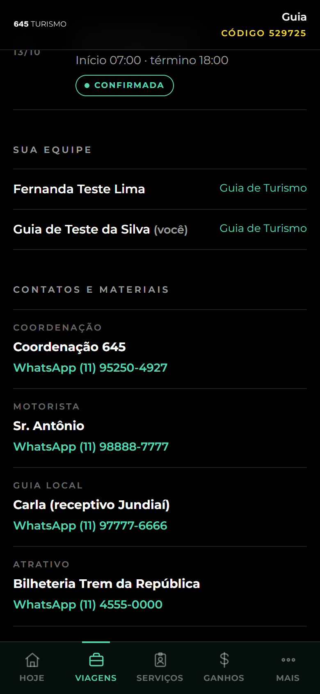
Em Serviços ficam os trabalhos sem lista de passageiros: recepção e credenciamento, serviço de bordo, eventos, feiras, receptivo e corporativo. Convite, briefing, relatório e pagamento funcionam como nas viagens.
| No convite | Como funciona |
|---|---|
| Por diária | O valor vale para cada dia trabalhado |
| Valor fechado | Um valor só pelo serviço inteiro, por mais dias que tenha |
| Sem custo | Funções como a coordenação podem ser escaladas sem valor |
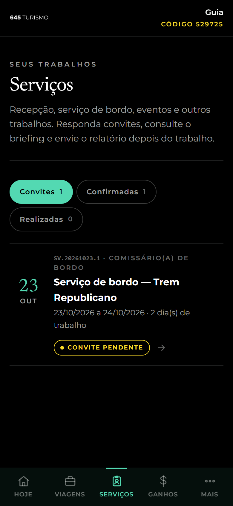
Cada dia pode ter horários diferentes. Confira dia a dia em Seus dias:
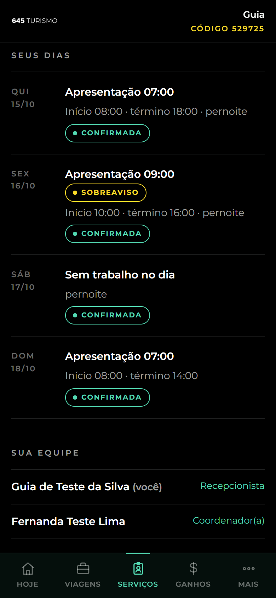
No topo aparecem o código, o tipo de serviço, o local e o período. Os quadros mostram os horários gerais; os de cada dia ficam em Seus dias.
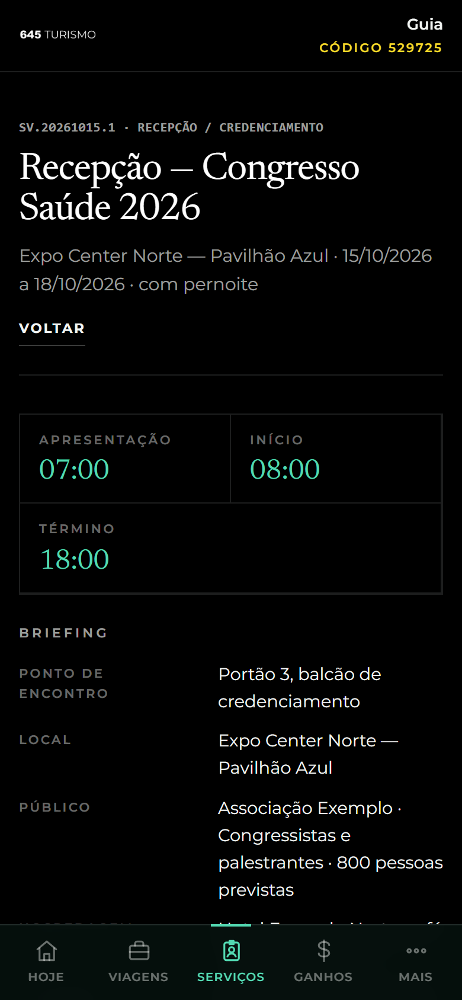
Nas viagens, a lista é enviada pela equipe e se atualiza sozinha a cada poucos segundos. Se outro colega faz um check-in, você vê na hora.
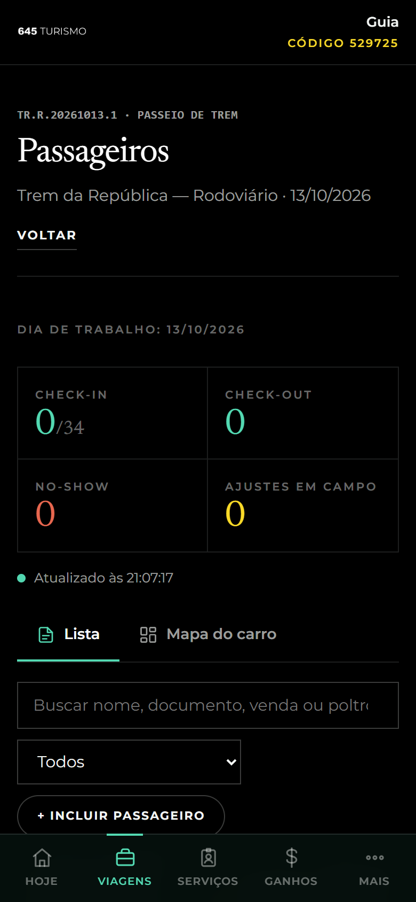
Cada passageiro aparece com o essencial: poltrona, nome, tipo (criança, colo, staff), documento, nascimento e embarque, com um botão só de Check-in. Depois do check-in, o mesmo botão vira Check-out.
Errou? Toque de novo no botão marcado para desfazer.
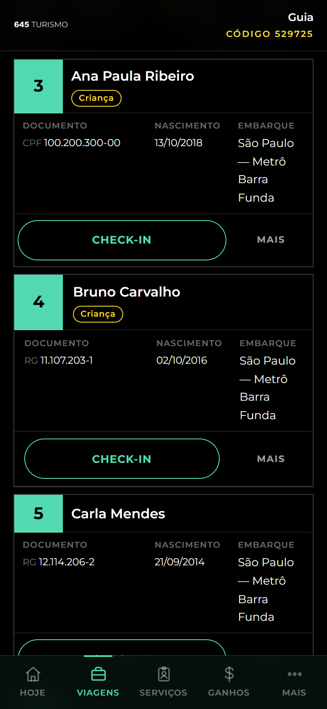
Toque em Mais para ver tipo de passageiro e de documento, venda (reserva), telefone e observação. Ali ficam também:
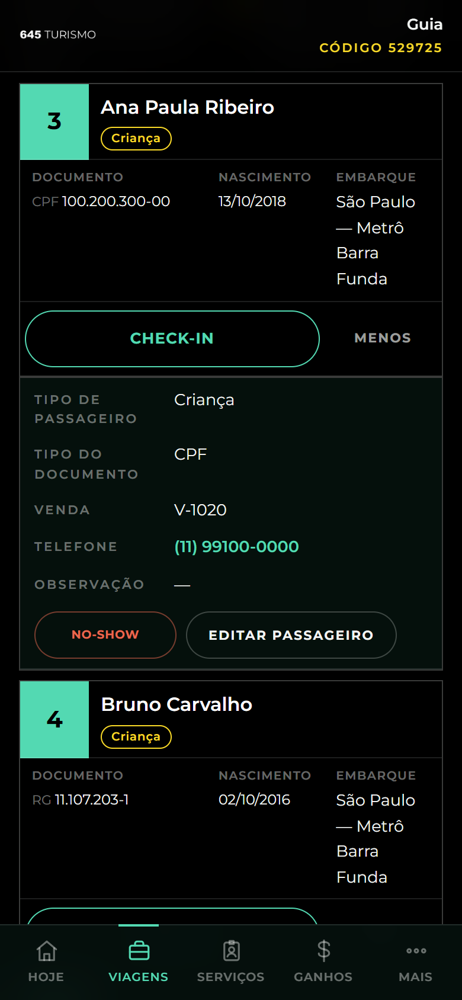
Corrija o que precisar e toque em Salvar. A alteração aparece em amarelo, o dado original fica guardado e a coordenação recebe um e-mail.
Troca de última hora? Toque em + Incluir passageiro. Ele também aparece em amarelo.
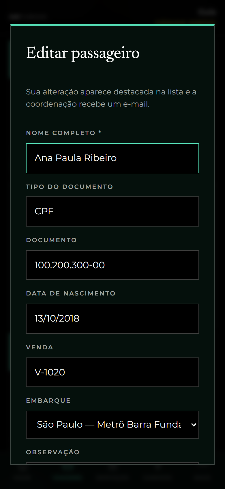
A aba Mapa do carro mostra o veículo visto de cima, com cada poltrona. É o jeito mais rápido de achar um passageiro no embarque.
| Cor | Significado |
|---|---|
| Contorno escuro | Livre |
| Verde-claro | Reservada |
| Menta cheio | Check-in feito |
| Vermelho riscado | No-show |
| Amarelo piscando | Mesma reserva da poltrona escolhida |
| Listrada | Bloqueada pela coordenação |
| Borda vermelha | Poltrona com problema (duplicada ou bloqueada com passageiro) |
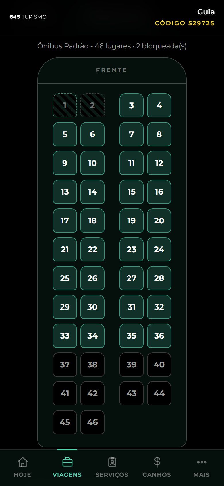
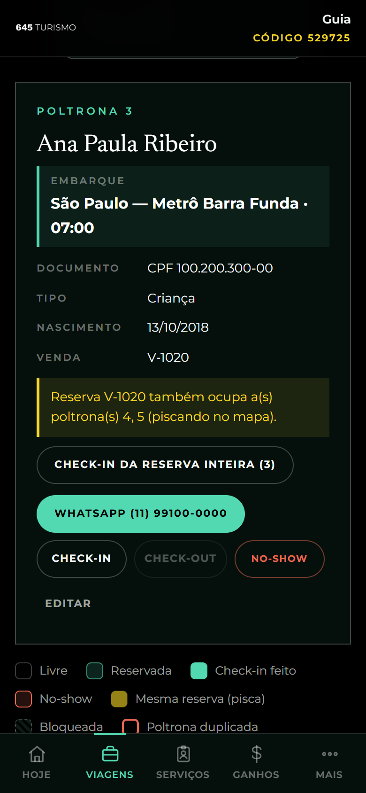
Durante o trabalho, avise a equipe pelos comentários. Quando ele terminar, faça o relatório e envie a nota fiscal no Pós-viagem.
Na página da viagem ou do serviço confirmado, use Comentários para a equipe para avisos rápidos: atraso, troca de embarque, mudança de local, ocorrência com o grupo. A coordenação lê no painel.
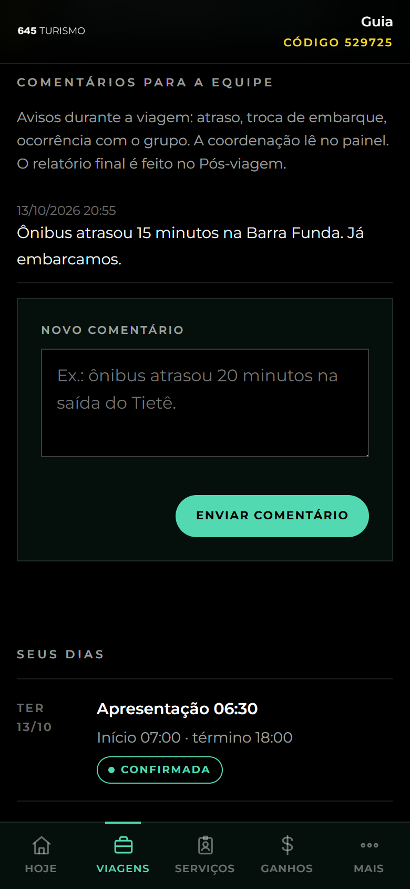
Abra em Mais → Pós-viagem (ou pelo aviso em "Para resolver"). Cada trabalho terminado aparece em Para fazer:
Você pode ajustar o relatório até a equipe conferir. Se algo voltar, o motivo aparece em vermelho. O que já foi enviado fica na aba Enviadas.
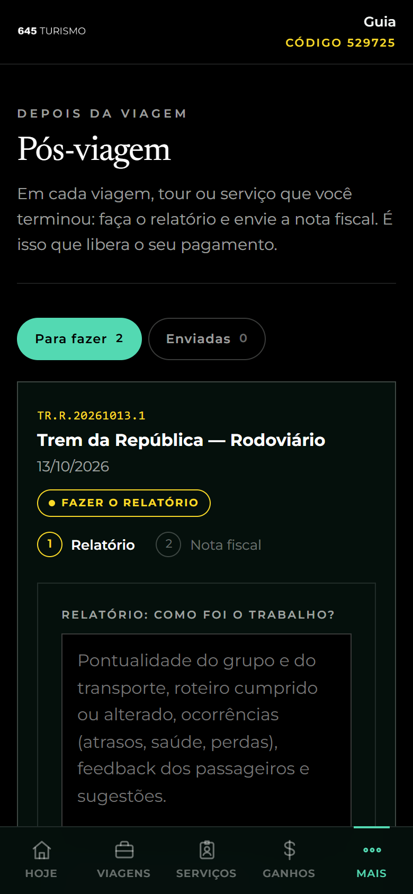
Diga quando pode trabalhar. A equipe vê sua agenda na hora de escalar, e você recebe convites que combinam com ela.
No calendário: verde-escuro é disponível, contorno vermelho é indisponível, menta são trabalhos confirmados e amarelo são convites. Toque numa marcação para removê-la.
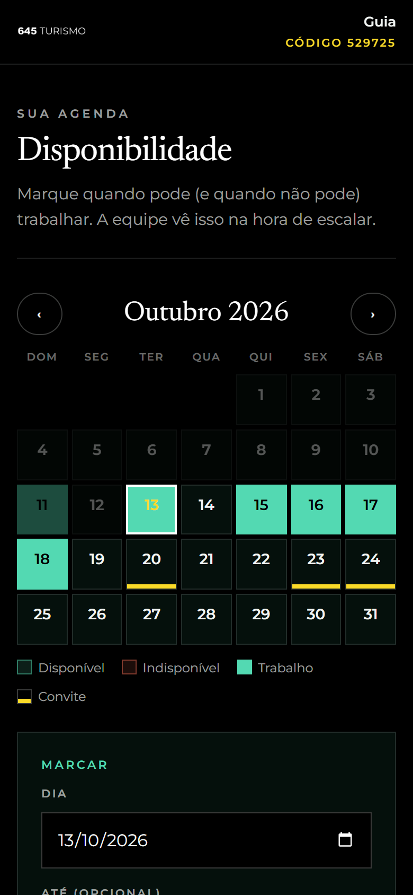
Em Ganhos você acompanha cada trabalho, do convite aceito até o pagamento. Os valores são só seus: nenhum outro prestador vê.
O relatório e a nota fiscal são enviados no Pós-viagem (capítulo 8). Quem não emite nota fiscal pula as etapas 3 e 4. Quando o pagamento é feito, aparecem a data e o comprovante.
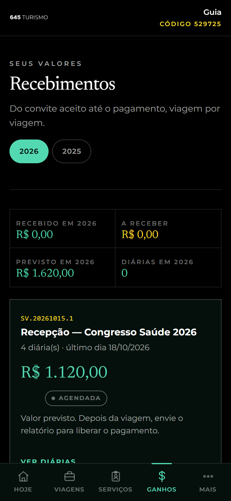
Mantenha seus dados em dia: é com eles que a equipe monta as escalas e faz os pagamentos. Abra em Mais → Perfil.
| Aba | O que você muda |
|---|---|
| Dados | Nome, como prefere ser chamado, contato, endereço, camiseta, alimentação e saúde |
| Atuação | Funções, idiomas, especialidades e Cadastur |
| Recebimento | CNPJ (ou "Não emito nota fiscal") e PIX |
| Senha | Troca da senha de acesso |
No topo aparecem seu código, o CPF parcialmente escondido e a situação do cadastro. Telefones são gravados no formato (11) 95250-4927.
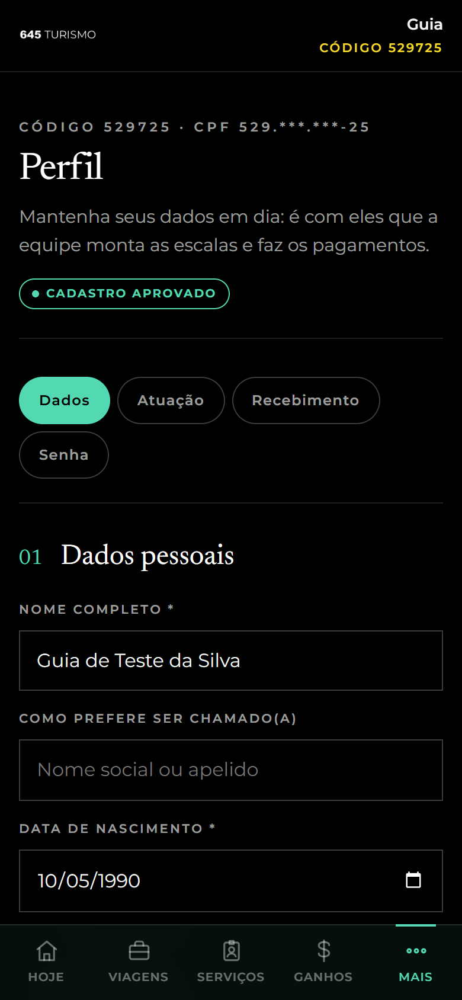
Em Mais → Ajuda você tira dúvidas e fala com a equipe.
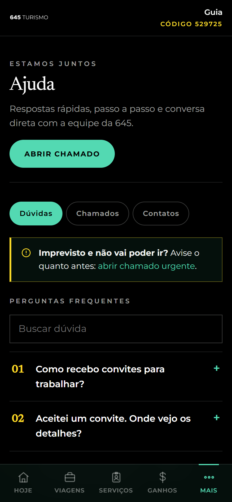
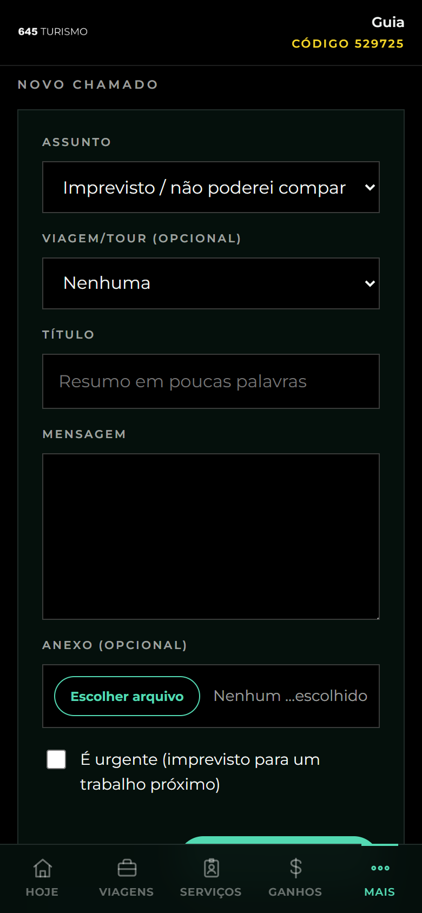
As situações mais frequentes e o que fazer em cada uma.
| Situação | O que fazer |
|---|---|
| Esqueci minha senha | Na tela de entrada, toque em "Esqueci a senha" e informe o CPF. O link chega no e-mail do cadastro e vale por 1 hora. |
| A senha temporária não funciona | Ela vale 7 dias. Vencida, use "Esqueci a senha" ou peça um novo acesso à equipe. |
| Comecei o cadastro e não consigo continuar | Toque em "Continuar um cadastro que comecei" e informe o CPF. O link chega no seu e-mail. |
| Os botões de check-in estão apagados | Eles só funcionam no dia do trabalho e no dia seguinte. |
| Estou sem internet no embarque | Marque normalmente. As marcações ficam guardadas no celular e são enviadas quando o sinal voltar. |
| O sistema não aceita a poltrona | A poltrona está bloqueada, não existe no veículo ou já tem passageiro. Só criança de colo divide poltrona; só Staff ocupa poltrona bloqueada. |
| O embarque do passageiro não está na lista | Só aparecem os locais cadastrados na viagem. Fale com a coordenação para incluir um novo ponto. |
| Não vejo a lista de passageiros | A lista abre depois que você confirma presença. Serviços (recepção, bordo, eventos) não têm lista de passageiros. |
| Não sei o valor | Ele vem no e-mail do convite. Depois de aceito, aparece em Ganhos. |
| Onde envio o relatório? | Em Mais → Pós-viagem, depois do último dia do trabalho. |
| Não vou poder ir a um trabalho | Abra um chamado urgente em Ajuda o quanto antes. |
Dúvidas sobre este manual? Abra um chamado em Ajuda.
sistema.645turismo.com.br